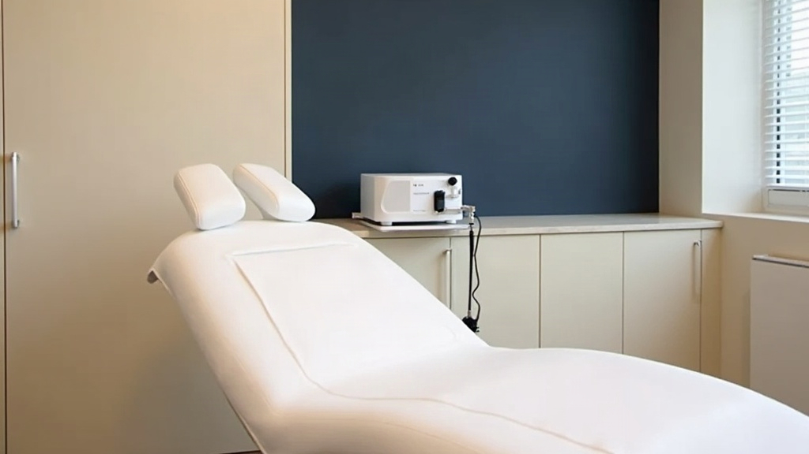

Areas of concern
Two related problems that need different answers: the breakouts that are happening now, and the texture they leave behind once they stop.
The part that wears you down
Adult acne does not behave like teenage acne, and the products aimed at teenagers often make it worse by stripping skin that is already inflamed. Meanwhile the scarring left by previous breakouts does not respond to anything that treats active acne, so a single product cannot fix both.
The usual pattern is years of switching products, brief improvement, then relapse, with the scarring quietly accumulating underneath.
What changes
Active acne and scarring get separated. They are different problems on the same face and they are sequenced, not merged. Treating scars while acne is active generally wastes the scar treatment.
The cause gets considered, not just the surface. Adult acne interacts with hormones, medications and other conditions, which is why a physician assessment covers more than skin.
Your current products get reviewed. Several common actives aggravate this, and stopping the wrong one is often the first improvement.
An evaluation determines whether a treatment is appropriate at all. It is not a safety or outcome guarantee.
How it is approached
The evaluation decides the approach and the order. Depending on what is found, the plan may involve light-based treatment directed at active acne, treatments aimed at texture and scarring once the acne is controlled such as microneedling or Scarlet RF, and a skincare plan that supports rather than fights either, which may draw on a medical facial or Obagi SkinTrinsiq.

Sequence matters more than any single device. Which treatment applies to you, if any, is the outcome of the evaluation rather than an input to it.
Who this is for
Adults roughly 35-65 across Marin County who want visible improvement in skin, body contour or pelvic-floor function, and who want a physician evaluating whether a treatment is appropriate for them at all.
Adult acne is a common reason people arrive here having already been treated as though they were nineteen.
The ceiling
Nearby
Before you book
Are the dark marks scars?
Usually not. Flat brown or red marks left after a breakout are pigment change, and they behave differently from true textural scarring. Telling them apart is part of the evaluation and it changes the plan completely.
Can the acne and the scarring be treated at once?
Generally not, and attempting it tends to waste the scar treatment. Active acne is usually settled first.
Do I have to stop my current skincare?
Some of it, probably. That is a specific instruction you leave with rather than a general warning.
What does it cost?
Quote-only pricing. During your consultation, we will build a customized treatment plan with packaged pricing.
Cost
Quote-only
Start with the evaluation
No price list is published here because a real figure depends on what the evaluation finds.